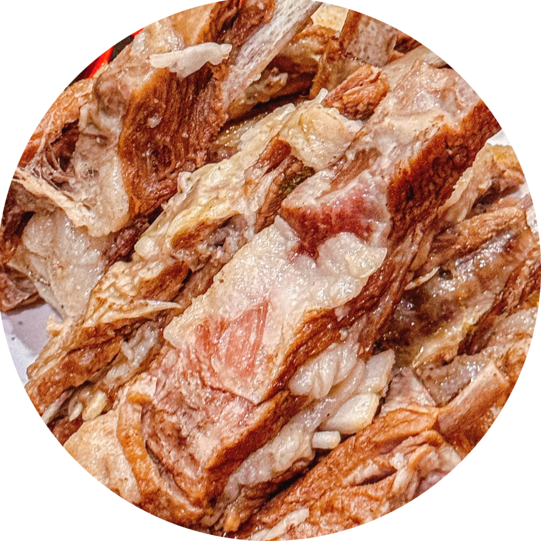
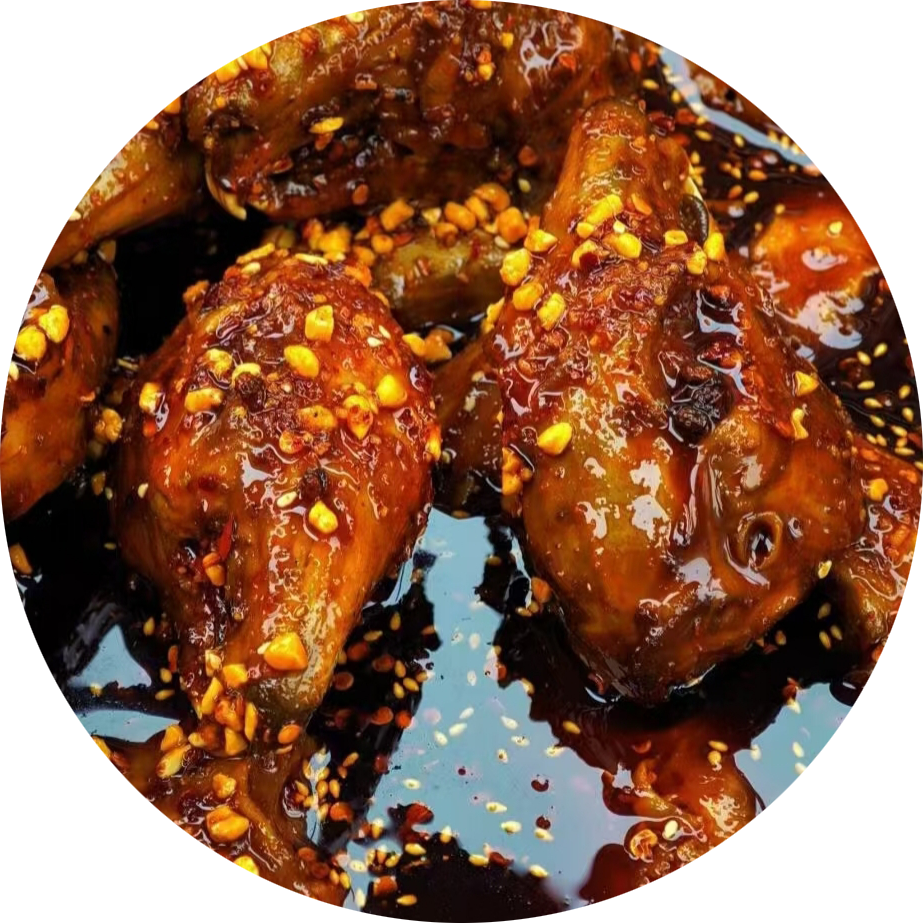
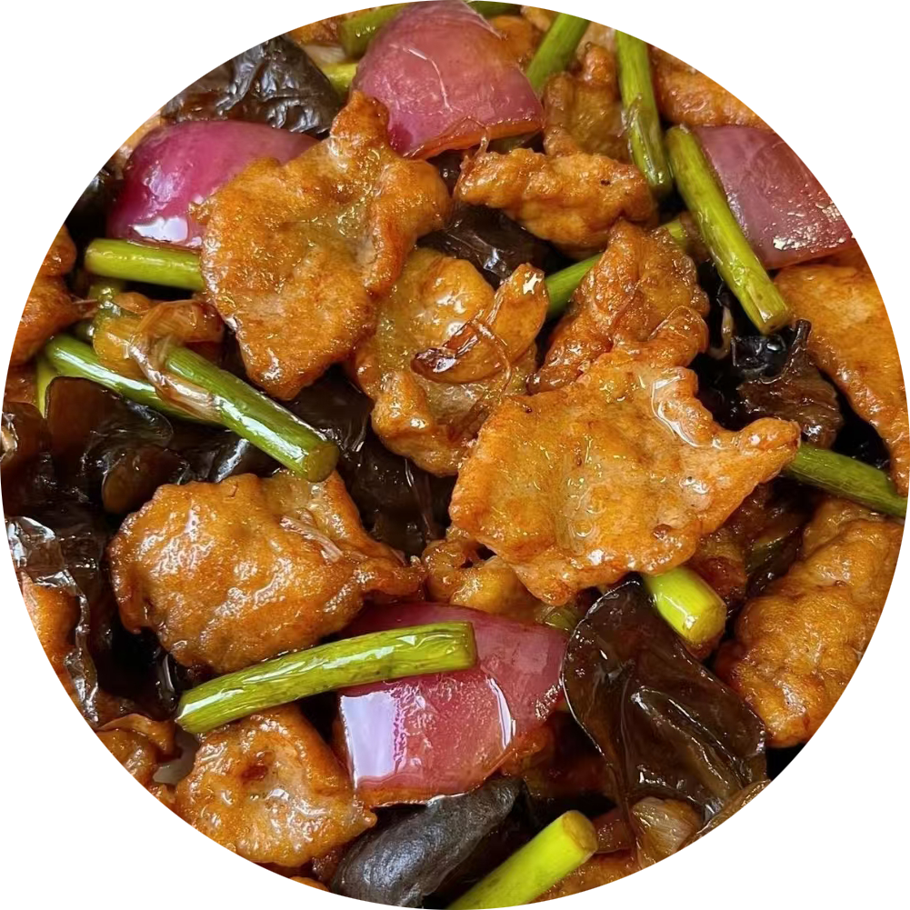
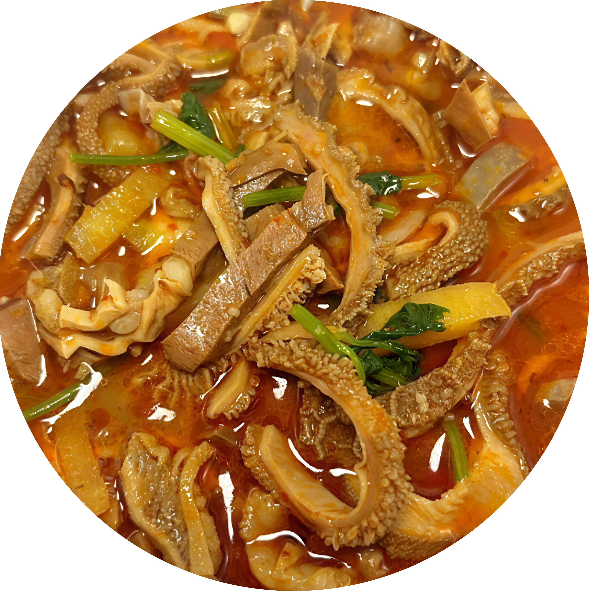

手抓羊肉
大同传统名肴，源自塞北游牧民族饮食文化。选用恒山脚下放养羔羊，制作讲究：
- 恒山泉水炖煮保持鲜嫩
- 秘制调料：大同沙葱、浑源黄芪
- 配广灵豆腐同煮增香
肉质鲜嫩多汁，肥而不腻，搭配大同铜火锅食用更显塞北豪迈风情。

大同传统名肴，源自塞北游牧民族饮食文化。选用恒山脚下放养羔羊，制作讲究：
肉质鲜嫩多汁，肥而不腻，搭配大同铜火锅食用更显塞北豪迈风情。

大同夜市特色小吃，制作工艺独特：
先吮吸卤汁，再拆解脸颊肉，最后吸食脑髓。建议搭配大同本地沙棘汁解辣。

大同传统名菜，晋北特色代表：
传统吃法搭配大同黄糕，肉香与糕香交融，体现塞北饮食粗犷特色。

大同经典早餐，讲究"三绝"：
汤底用大同铜锅熬制，加入浑源粉条，配大同陈醋提鲜，冬日驱寒佳品。
